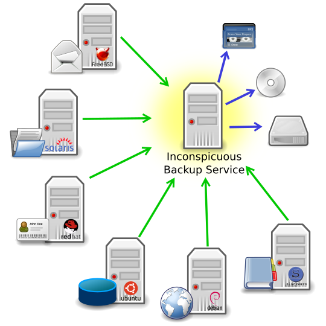

This program is free software: you can redistribute it and/or modify it under the terms of the GNU General Public License as published by the Free Software Foundation, either version 3 of the License, or (at your option) any later version.
This program is distributed in the hope that it will be useful, but WITHOUT ANY WARRANTY; without even the implied warranty of MERCHANTABILITY or FITNESS FOR A PARTICULAR PURPOSE. See the GNU General Public License for more details.
You should have received a copy of the GNU General Public License along with this program. If not, see http://www.gnu.org/licenses/.
Inconspicuous Backup Service is a service meant to run on a dedicated backup server. It backs up data from other Linux and Unix-like servers via SSH. There is no need for installing a backup agent on those servers or doing any special configuration on these hosts, despite SSH access configuration.

The installation and initial configuration on the backup server itself is quite some work. Additionally the backup server needs good hardening and shouldn't do anything but backup, because its root user also has root access to all other servers/hosts. Therefore you might want to get your hands on a preconfigured backup appliance. If you do the job yourself, you work your way through the installation instructions.
As opposed to all the requirements regarding the backup server itself there are almost no special requirements for the hosts (the servers you want to backup). You should be able to backup files and services from almost any Unix-like operating system, including Linux, BSD and MacOS X. The only requirement is an SSH server running on a host, that allows public private key authentication. So, you can backup a 20 year old Unix server as well as a future Linux server that will be released five years in the future. That’s the key feature of Inconspicuous Backup Service.
Another important feature is the flexibility of Inconspicuous Backup Service regarding integration with other backup solutions. This flexibility is achieved through the design of the backup process itself. First, Inconspicuous Backup Service creates database dumps of configured services like MySQL on the hosts themselves. Then it clones those dumps and all configured folders to its First Level Backup Directory, using Rsync. After the synchronisation process, Inconspicuous Backup Service can either create backups of the cloned folders itself or leave the job to another backup solution. So, Inconspicuous Backup Service can be used to simplify the Linux/BSD/Unix integration with an enterprise grade backup solution or to add network backup support to a single host backup solution.
You can achieve all these features with rather simple backup scripts you create on your own. But there is more to it than just the core functionality of a good backup script. The configuration files of Inconspicuous Backup Service are very easy to manage compared to editing a script. With the integrated test feature, integration of new hosts can be tested in no time. And most important of all, Inconspicuous Backup Service provides a centralized and very well designed report system. It enables you to decide within seconds if everything is working as expected and also delivers detailed information whenever required.